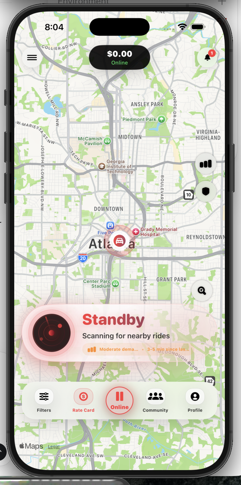
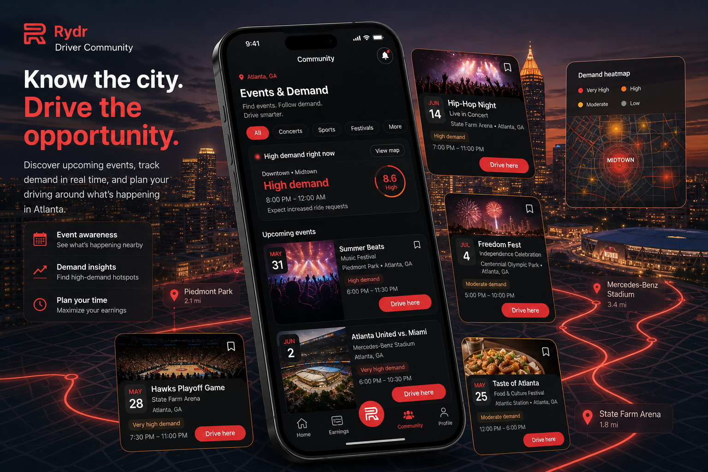

Reliability matters, but one decision should not define your driving record.
Rydr Driver
Drive Different.
Set your rates for the ride types you qualify for and review estimated earnings before you accept. Track your documents, earnings, and payouts in the Driver app.

Built for independent drivers
More control over how, where, and when you earn.
Use the Rate Card to set your prices, review trip details on incoming offers, and manage payouts from your wallet.
Rate Card
Set Rates That Work for You.
Set a minimum fare, a per-mile rate, and a per-minute rate for each ride type you qualify for. Edit your Rate Card while offline. You can use Rydr’s suggested rates or enter your own.
Set your rates before going online
- Open Rate Card while offline.
- Select a ride type you qualify for.
- Review the suggested rates or set your own, then save.

Driver Dashboard
Know Where Demand Is Moving.
See nearby ride activity and go online when you’re ready. An incoming offer shows trip information and estimated earnings. After accepting, follow in-app navigation to the pickup and message the rider if needed.
Live request pings
Demand indicators
Upfront ride offers
In-app navigation
Community
Drive Where Opportunity Happens.
Community helps drivers stay connected to what's happening across the city. Discover concerts, sporting events, festivals, and other local gatherings that naturally increase transportation demand. Plan your driving schedule around upcoming events, anticipate busy areas, and position yourself where riders are already headed. It's another way Rydr helps drivers make informed decisions about when and where to drive.

TonightDemand near venues
Driver Standards
A Better Experience for Riders. A Better Platform for Drivers.
Great transportation starts with reliability and professionalism. Rydr monitors key performance indicators such as acceptance, cancellations, and on-time arrivals to help maintain a dependable experience for everyone using the platform. We understand that situations change and occasional declines or cancellations are part of driving. Rather than focusing on isolated events, we look for consistent driving patterns that support a reliable marketplace while giving drivers the flexibility they need.
Plans change. Rydr looks for consistent behavior, not single exceptions.
Riders deserve dependable pickup experiences, and drivers deserve clear standards.
Driver Qualifications
Get your documents ready.
Upload a clear driver’s license, vehicle registration, and proof of insurance in the Driver app. Rydr checks readable documents automatically and reviews others manually. You’ll get an in-app notification when a document is approved and instructions if you need to upload a replacement.
Earnings
See what you earn.
On standard dispatched rides, you earn 90% of the ride subtotal and any billable wait, plus 100% of tips. Rydr’s booking fee is separate. Check estimated earnings before accepting and review completed trips and payout history in the app.
90%Ride subtotal and billable wait
100%Of tips
Wallet & Payouts
Link a bank account for eligible weekly payouts. If your account and debit card qualify, you can request an instant payout from your available balance.
Review payout methods, status, and history in the Driver app.
Drive with Rydr
Build your driving business differently.
Join the driver list for your market. Rydr will send next steps as driver availability opens.